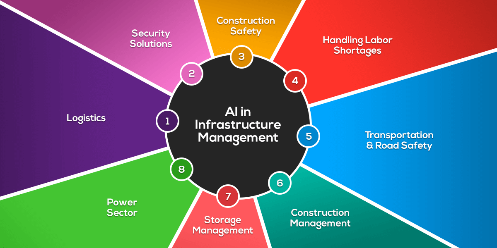

AI - INFRASTRUCTURE
AI infrastructure forms the backbone of artificial intelligence applications, encompassing various components that enable the development, deployment, and maintenance of advanced machine learning models. In a concise overview, several key aspects define the landscape of AI infrastructure:
1.Computational Power:
AI relies on intense computational power for training complex models. High-performance computing clusters and Graphics Processing Units (GPUs) play a pivotal role in accelerating the training process, allowing for the efficient processing of vast datasets.
2.Cloud Computing:
Cloud platforms like AWS, Azure, and Google Cloud offer scalable and on-demand resources, reducing the need for extensive upfront investments in hardware. This flexibility enables organizations to access computational power, storage, and specialized AI services as needed.

3.Data Storage and Management:
Managing the extensive datasets crucial for AI applications requires a robust data infrastructure. Distributed databases and data lakes are essential for storing, organizing, and retrieving data efficiently during the model training process.
4.Frameworks and Libraries::
Frameworks such as TensorFlow and PyTorch, coupled with libraries like scikit-learn, provide the foundation for developing AI applications. These tools offer pre-built functions and structures, accelerating the development and deployment of machine learning models.
5.Containerization and Orchestration:
Technologies like Docker and Kubernetes facilitate the packaging and deployment of AI applications. Containerization ensures consistency across diverse environments, while orchestration simplifies the management of these containerized applications at scale.
6.Security Measures and Monitoring:
Ensuring the security of AI infrastructure is paramount. Encryption, access controls, and regular security audits safeguard sensitive data and models. Simultaneously, continuous monitoring and logging provide insights into system behavior, aiding in performance optimization, issue resolution, and maintaining the overall health of the AI infrastructure.
In conclusion, a robust AI infrastructure integrates computational power, cloud capabilities, effective data management, powerful frameworks, containerization, and security measures. This synergy forms the foundation for organizations to harness the transformative potential of artificial intelligence in various domains.